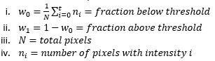
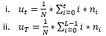
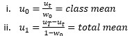
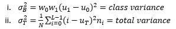
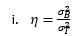
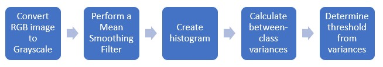

Methodology
The major part of each program is obtaining the threshold value that will be used for mapping the original image.
This can be broken down into a step by step process:
- Convert RGB image to Grayscale (24-bit depth to 8-bit depth)
- Read the image in per-pixel
- Use the weighted equation: avg=0.21*r+0.72*g+0.07*b
- Write the new value to the pixel
- Perform a Mean Smoothing Filter to the image
- Read in the values surrounding a central pixel (the kernal)
- Find the mean value of those values
- Apply the mean value to the kernal
- Create a histogram from the smoothed image
- Read image per-pixel
- Store the frequency of each intensity value in the corresponding index
- Chart the histogram
- Calculate the between-class variance for each threshold
- calculate the fraction of pixels above and below the current threshold value

- Calculate the pixel intensity average

- Calculate the class and total mean

- Calculate the class variance and total variance

- Calculate the between-class variance

- The threshold that has the maximum between-class variance will be used to separate the foreground and background.
- Use the threshold to create a binary image with values above being mapped to black, and values below mapped to white.
- After this step the Otsu process is done and the resulting image is taken as the output
- The following steps are for the APT method
- Quantize the original image using the threshold value
- Repeat the Otsu process with the new image and take the final binary image as the output
Simplified flow chart of this process:
